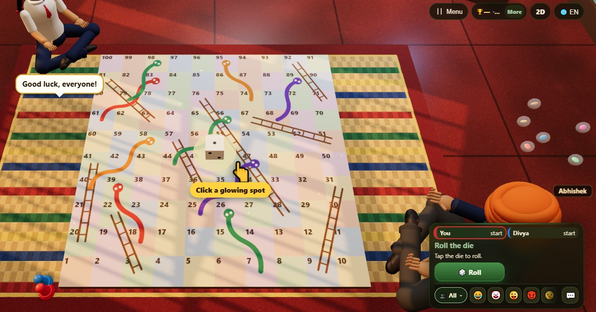

蛇梯棋 (Snakes and Ladders)
- 👥 2–4 人
- 棋类游戏
- 🆓
中文指南
爬梯子，躲蛇，正好走到100。
English name: Snakes and Ladders

玩法
- 所有人从棋盘外、第 1 格之前出发，轮流掷骰子。
- 按棋盘上的数字顺序，把棋子向前走掷出的点数。
- 停在梯子底部就爬到顶上，停在蛇头上就滑到蛇尾。
- 掷出六点可以再掷一次。
- 第 100 格需要正好的点数。如果点数会超过，棋子原地不动。
计分
游戏中不计分。结果表显示每人到达的格子。
怎样获胜
最先正好停在第 100 格的人获胜。
常见问题
必须正好走到 100 吗？
是的。点数太大就原地不动，下一轮再试。
这个游戏全靠运气吗？
是的，完全靠运气。所以任何年龄、任何水平的人都能赢。
玩法
- 游客模式: 不用注册，不用登录。选个名字马上开玩。
- 和电脑玩: 没人的时候，空位由电脑玩家补上。可选简单、普通、困难。
- 在线玩: 坐到公开桌，和来自世界各地的玩家对战。
- 和身边的朋友玩: 在一部手机上开局，分享房间码或二维码，朋友用自己的手机加入。
- 一部手机轮流玩: 手机轮流传：一部手机就够全家一起玩。
其他语言
- हिन्दी: साँप सीढ़ी
- Hinglish: Saanp Seedhi
- Español: Serpientes y escaleras
- Português: Cobras e Escadas
- Français: Serpents et échelles
- Deutsch: Schlangen und Leitern
- Bahasa Indonesia: Ular Tangga
- Türkçe: Yılan Merdiven
- Italiano: Scale e serpenti
- 日本語: へびとはしご
- 한국어: 뱀과 사다리
- Русский: Змеи и лестницы
- اردو: سانپ سیڑھی
- नेपाली: सर्प र भर्याङ
- বাংলা: সাপলুডু
- English: Snakes and Ladders · 完整规则（英文）
游戏点子
全部游戏


ChitPlay 中没有真钱、赌注或奖品。积分没有任何价值。